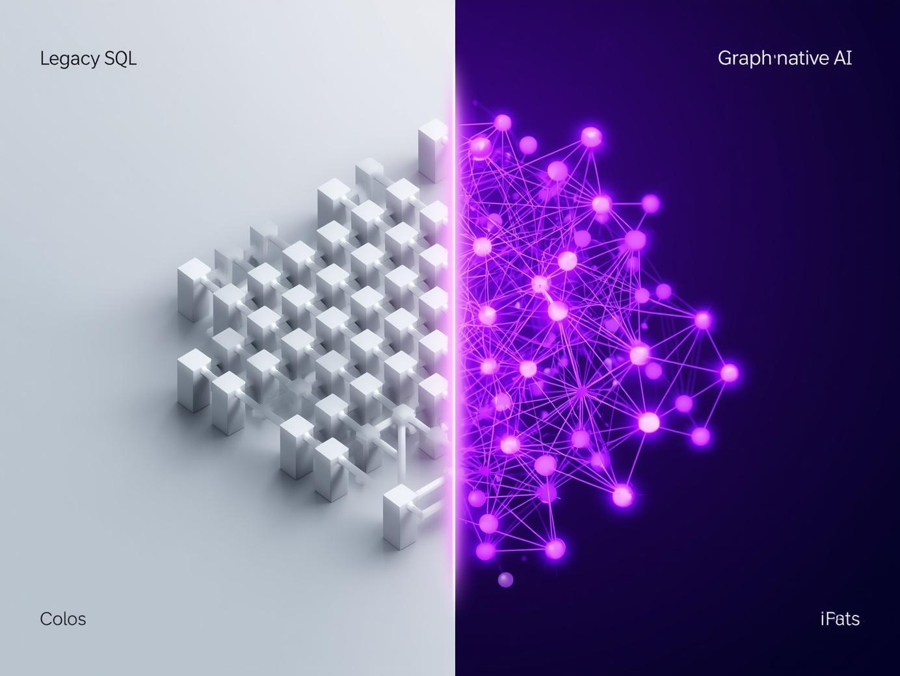

As enterprise schemas grow, LLMs hallucinate table names, fabricate joins, and produce broken queries. The rigid row and column model forces AI to guess at structural relationships it cannot see.
Wang et al. (2026) deploy a Knowledge Graph as a real time semantic guard. Every table name, column, and join is verified by the KG before execution eliminating hallucinations at source.
Hornsteiner (2024) demonstrates that real world data is a network, not a table. Querying Neo4j via Cypher, the LLM operates in a structure mirroring human cognition relationships are first class.